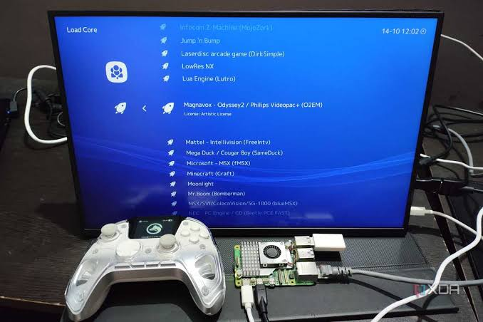

Console Retrô com LakkaOS
Conversão de uma TV Box (Rockchip RK3228A) em uma central dedicada de emulação retrô, configurada via SSH.

Sobre o Projeto
Este projeto uniu administração de sistemas Linux e retrogaming para reaproveitar o hardware de uma TV Box equipada com processador Rockchip RK3228A, transformando-a em uma estação dedicada de emulação com LakkaOS.
A implementação incluiu a preparação da imagem de sistema compatível com a arquitetura ARM do dispositivo, ajustes de inicialização e gerenciamento remoto de arquivos, ROMs e configurações de rede via SSH.
Tecnologias Utilizadas
Linux (LakkaOS)
SSH & Redes
Rockchip RK3228A
Emulação & RetroArch